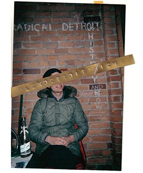

Planned well in advance, I think Bobby pretty much knew what he wanted to say and said it well. This interview is basically unedited except for where I personally went on too long in conversation. The fact Bobby never considered living there, his broader appreciation of the Tplex as an institution, as well as speaking to the reality of life in Detroit at that time are some of the reasons I chose to lead off with this interview.
I was born in 1984 in Grosse Pointe MI and grew up there on the first block outside of the city, (first block off Mack Ave). and in the 80’s and 90’s (and it still is), but especially back then, it was a very segregated place. When I was growing up there in the late 80’s and 90’s there was less of a disconnect because the far East side had not declined to the point that it would yet. I still had aunts, uncles and cousins still on the Detroit side and in fact me and my brother were the only cousins that grew up in the suburbs. The rest of them were raised in the city, until the mid 90’s when they all cleared out and completed the white flight exodus.
By that time the mid to late 90’s arguably, Detroit was in a state of crisis, and if you want to chart the arc of the city that may be the low point by some measures. It still had over a million people though and I remember being in high school and the 2000 census was coming up and the big question was: would Detroit have over a million people? Everyone knew the population was plummeting but didnt know how much it had fallen in 10 years. It ended up being short of a million and that was a big deal you know because of funding tied to population and now it’s like 650 K something. (Google search says 632 and shows a steady decline and for context Clevo is 367 and ATL is 495).
I read an article recently of signs of increasing black flight of youth leaving for work...
I’m sure. That’s where I was going with this; even since high school, which is 20 + years now, the city has lost a ⅓ of its population and most of that has been Black flight and if you think of it, that is pretty unbelievable. By the year 2000 everything the city has been through and the 40 years preceding that, to then just continue to lose population is staggering.
My Dad worked downtown and took the bus to work everyday and I started my schooling in the city and went to church in the city and basically to get anywhere you had to go through Detroit cause it was on the edge of our street, so I think I did have a different relationship than most suburban kids in metro Detroit, (to the city), growing up in such proximity and with a relationship to it and at that time. It was very taboo. In the late 90’s and 2000’s the general assumption among white people in the region was there is nothing there for us and nothing there for you, loaded with racist and classist assumptions and hyperbole about how dangerous it was etc., although it was a crazy time and there are elements of truth about how there was a breakdown of the social fabric for sure...
.webp)